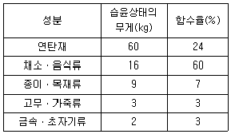
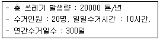
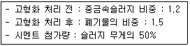
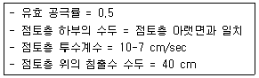
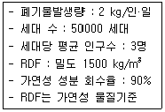
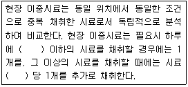
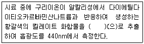
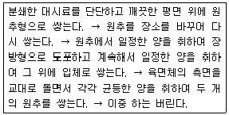

폐기물처리기사 (2015-09-19 기출문제)
1과목: 폐기물 개론
1. 다음 국제협약 및 조약 중에서 유해폐기물의 국가 간 이동 및 그 처리의 통제를 위한 것은?
- 런던국제덤핑 협약
- GATT 협약
- 리우(Rio) 협약
- 바젤(Basel) 협약
(정답률: 87%)

2. 폐기물의 열분해에 관한 설명으로 틀린 것은?
- 폐기물의 입자 크기가 작을수록 열분해가 조성된다.
- 열분해 장치로는 고정상, 유동상, 부유상태 등의 장치로 구분되어질 수 있다.
- 연소가 고도의 발열반응임에 비해 열분해는 고도의 흡열반응이다.
- 폐기물에 충분한 산소를 공급해서 가열하여 가스, 액체 및 고체의 3성분으로 분리하는 방법이다.
(정답률: 81%)
3. 효율적이고 경제적인 수거노선을 결정할 때 유의할 사항으로 틀린 것은?
- 수거인원 및 차량형식이 같은 기존 시스템의 조건들을 서로 관련시킨다.
- 아주 많은 양의 쓰레기가 발생되는 발생원은 하루 중 가장 먼저 수거한다.
- U자형 회전을 이용하여 수거하고 가능한 시계방향으로 수거노선을 결정한다.
- 출발점은 차고와 가깝게 하고 수거된 마지막 콘테이너가 처분지의 가장 가까이에 위치하도록 배치한다.
(정답률: 82%)
4. 쓰레기의 양이 2000 m3 이며, 밀도는 0.95 t/m3이다. 적재용량 20 ton의 트럭이 있다면 운반하는데 몇 대의 트럭이 필요한가?
- 100대
- 50대
- 48대
- 95대
(정답률: 74%)
5. 쓰레기 적환장 설치가 필요한 경우에 관한 설명으로 틀린 것은?
- 고밀도 거주 지역이 존재하는 경우
- 불법 투기와 다량의 어지러진 쓰레기가 발생하는 경우
- 상업지역에서 폐기물 수집에 소형용기를 많이 사용하는 경우
- 슬러지수송이나 공기수송방식을 사용하는 경우
(정답률: 85%)
6. 취성도가 낮은 쓰레기는 전단파쇄가 유효하다. 취성도를 가장 바르게 나타낸 것은?
- 압축강도와 인장강도의 비로 나타낸다.
- 인장강도와 전단강도의 비로 나타낸다.
- 충격강도와 전단강도의 비로 나타낸다.
- 충격강도와 압축강도의 비로 나타낸다.
(정답률: 55%)
7. 다음 중 pipe line(관로수송)에 의한 폐기물 수송에 대한 설명으로 거리가 먼 것은?
- 단거리 수송에 적합하다.
- 잘못 투입된 물건은 회수하기가 곤란하다.
- 조대쓰레기에 대한 파쇄, 압축 등의 전처리가 필요하다.
- 쓰레기 발생밀도가 낮은 곳에서 사용된다.
(정답률: 86%)
8. 채취한 쓰레기 시료에 대한 성상분석 절차 중 가장 먼저 이루어지는 것은?
- 전처리
- 분류
- 건조
- 밀도측정
(정답률: 86%)
9. 폐기물 발생량 예측방법 중 하나의 수식으로 쓰레기 발생량에 영향을 주는 각 인자들의 효과를 총괄적으로 나타내어 복잡한 시스템의 분석에 유용하게 사용할 수 있는 것은?
- 상관계수 분석모델
- 다중회귀 모델
- 동적모사 모델
- 경향법 모델
(정답률: 75%)
10. 슬러지를 처리하기 위하여 생슬러지를 분석한 결과 수분은 90%, 총고형물 중 휘발성 고형물은 70%, 휘발성 고형물의 비중은 1.1, 무기성 고형물의 비중은 2.2 였다. 생슬러지의 비중은? (단, 무기성 고형물 + 휘발성 고형물 = 총 고형물)
- 1.023
- 1.032
- 1.041
- 1.⑤3
(정답률: 58%)
11. 쓰레기를 파쇄하여 매립할 때의 이점과 가장 거리가 먼 것은?
- 곱게 파쇄하면 매립시 복토가 필요없거나 복토요 구량이 절감된다.
- 매립시 안정적인 혐기성 조건을 유지하여 냄새가 방지된다.
- 매립작업이 용이하고 압축장비가 없어도 고밀도의 매립이 가능하다.
- 폐기물 입자의 표면적이 증가되어 미생물작용이 촉진된다.
(정답률: 60%)
12. 쓰레기 발생량 및 성상변동에 관한 설명으로 틀린 것은?
- 일반적으로 도시의 규모가 커질수록 쓰레기의 발생량이 증가한다.
- 일반적으로 수집빈도가 높을수록 발생량이 증가한다.
- 일반적으로 쓰레기통이 작을수록 발생량이 증가한다.
- 생활수준이 높아지면 발생량이 증가하며 다양화 된다.
(정답률: 89%)
13. 어느 도시의 쓰레기 특성을 조사하기 위하여 시료 90 kg에 대한 습윤상태의 무게와 함수율을 측정한 결과가 다음표와 같은 때 이 시료의 건조중량은?

- 약 50 kg
- 약 65 kg
- 약 70 kg
- 약 75 kg
(정답률: 71%)
14. 슬러지의 수분을 결합상태에 따라 구분한 것 중에서 탈수가 가장 어려운 것은?
- 내부수
- 간극모관결합수
- 표면부착수
- 간극수
(정답률: 82%)
15. 쓰레기 선별에 관한 설명으로 틀린 것은?
- 관성선별은 분쇄된 폐기물을 가벼운 것(유기물)과 무거운 것(무기물)으로 분리한다.
- 인력선별은 정확도가 높고 파쇄공정 유입전 폭발가능 위험물질을 분류할 수 있다는 장점이 있다.
- Zigzag 공기 선별기는 컬럼의 층류를 발달시켜 선별효율을 증진시킨 것이다.
- 진동 스크린 선별은 주로 골재 분리에 많이 이용 하며 체경이 막히는 문제가 발생할 수 있다.
(정답률: 60%)
16. 폐유리병을 크기 및 색깔별로 선별할 수 있는 방법으로 가장 적절한 것은?
- Hand Sorting
- Flotation
- Wet-Classifier
- Screen
(정답률: 76%)
17. 쓰레기 압축기를 형태에 따라 구별한 것으로 틀린 것은?
- 소용돌이식 압축기
- 충격식 압축기
- 고정식 압축기
- 백(bag) 압축기
(정답률: 50%)
18. 함수율 90%인 폐기물에서 수분을 제거하여 처음 무게의 70%로 줄이고 싶다면 함수율을 얼마로 감소시켜야 하는가? (단, 폐기물 비중은 1.0 기준)
- 72.3 %
- 77.2 %
- 81.6 %
- 85.7 %
(정답률: 71%)
19. 다음 경우의 쓰레기의 수거 노동력(MHT)은?

- 1
- 2
- 3
- 4
(정답률: 79%)
20. 쓰레기의 발열량을 구하는 식 중 Dulong 식에 대한 설명으로 맞는 것은?
- 고위발열량은 저위발열량, 수소함량, 수분함량만으로 구할 수 있다.
- 원소분석에서 나온 C, H, O, N 및 수분 함량으로 계산할 수 있다.
- 목재나 쓰레기와 같은 셀룰로오즈의 연소에서는 발열량이 약 10% 높게 추정된다.
- Bomb 열량계로 구한 발열량에 근사시키기 위해 Dulong의 보정식이 사용된다.
(정답률: 65%)
2과목: 폐기물 처리 기술
21. 고형물 농도 10 kg/m3, 함수율 98%, 유량 700m3/일·인 슬러지를 고형물 농도 50 kg/m3 이고 함수율 95%인 슬러지로 농축시키고자 하는 경우 농축조의 소요 단면적(m2)은? (단, 침강속도는 10 m/일 이라고 가정한다.)(오류 신고가 접수된 문제입니다. 반드시 정답과 해설을 확인하시기 바랍니다.)
- 54
- 56
- 58
- 60
(정답률: 62%)
22. 위생매립방법 중 매립지 바닥층이 두껍고 복토로 적합한 지역에 이용하며, 거의 단층매립만 가능한 방법은?
- Trench 방식
- Sandwich 방식
- Area 방식
- Ramp 방식
(정답률: 77%)
23. 다음과 같은 조건으로 중금속슬러지를 시멘트 고형화할 때 용적변화는?

- 20% 증가
- 30% 증가
- 40% 증가
- 50% 증가
(정답률: 50%)
24. 건조된 고형분의 비중이 1.4 이며 이 슬러지 케익의 건조 이전의 고형분 함량이 50% 이라면 건조 이전 슬러지 케익의 비중은?
- 1.129
- 1.132
- 1.143
- 1.167
(정답률: 50%)
25. 포도당(C6H12O6)으로 구성된 유기물 3 kg이 혐기성 미생물에 의해 완전히 분해되어 생성되는 메탄의 용적(Sm3)은?
- 1.12
- 1.37
- 1.52
- 1.83
(정답률: 70%)
26. 토양오염 물질 중 BTEX에 포함되지 않는 것은?
- 벤젠
- 톨루엔
- 자일렌
- 에틸렌
(정답률: 84%)
27. 결정도(Crystallinity)에 따른 합성 차수막의 성질에 대한 설명으로 틀린 것은?
- 결정도가 증가할수록 단단해진다.
- 결정도가 증가할수록 충격에 약해진다.
- 결정도가 증가할수록 화학물질에 대한 저항성이 증가한다.
- 결정도가 증가할수록 열에 대한 저항성이 감소한다.
(정답률: 71%)
28. 미생물을 일단배양(batch culture)하는 경우 일반적인 미생물의 성장단계는?
- 대수성장단계 → 감소성장단계 → 내생성장단계
- 감소성장단계 → 대수성장단계 → 내생성장단계
- 대수성장단계 → 내생성장단계 → 감소성장단계
- 내생성장단계 → 대수성장단계 → 감소성장단계
(정답률: 53%)
29. 퇴비화의 영향인자인 C/N 비에 관한 내용으로 옳지 않은 것은?
- 질소는 미생물 생장에 필요한 단백질합성에 주로 쓰인다.
- 보통 미생물 세포의 탄질비는 25~50 정도이다.
- 탄질비가 너무 낮으면 암모니아 가스가 발생한다.
- 일반적으로 퇴비화 탄소가 많으면 퇴비의 pH를 낮춘다.
(정답률: 41%)
30. 매립지 내의 물의 이동을 나타내는 Darcy의 법칙을 기준으로 침출수의 유출을 방지하기 위한 옳은 방법은?
- 투수계수는 감소, 수두차는 증가시킨다.
- 투수계수는 증가, 수두차는 감소시킨다.
- 투수계수 및 수두차를 증가시킨다.
- 투수계수 및 수두차를 감소시킨다.
(정답률: 58%)
31. 토양오염 처리기술 중 토양증기추출법에 대한 설명으로 맞는 것은?
- 증기압이 낮은 오염물의 제거효율이 높다.
- 추출된 기체는 대기오염방지를 위해 후처리가 필요하다.
- 필요한 기계장치가 복잡하여 유지, 관리비가 많이 소요된다.
- 토양층이 균일하고 치밀하여 기체 흐름이 어려운 곳에서 적용이 용이하다.
(정답률: 64%)
32. 다음 중 부식질에 포함된 물질이 아닌 것은?
- 휴민(Humin)
- 플브산(Fulvic Acid)
- 휴믹산(Humic Acid)
- 아세트산(Acetic Acid)
(정답률: 67%)
33. 폐기물을 화학적으로 처리하는 방법 중 용매추출법에 대한 특징으로 가장 거리가 먼 것은?
- 높은 분배계수와 낮은 끓는점을 가지는 폐기물에 이용 가능성이 높다.
- 사용되는 용매는 극성이어야 한다.
- 증류 등에 의한 방법으로 용매 회수가 가능해야 한다.
- 물에 대한 용해도가 낮고 물과 밀도가 다른 폐기물에 이용 가능성이 높다.
(정답률: 52%)
34. 매립장 침출수 차단방법인 연직차수막과 표면차수막을 비교한 것으로 틀린 것은?
- 연직차수막은 지중에 수평방향의 차수층이 존재할 때 사용한다.
- 연직차수막은 지하수 집배수 시설이 필요하다.
- 연직차수막은 차수막 보강시공이 가능하다.
- 연직차수막은 차수막 단위면적당 공사비가 비싸다.
(정답률: 85%)
35. CO2 30 vol%와 NH3 70 vol%의 혼합 폐가스를 산 용액으로 흡수 처리하여 배가스 중 40 vol%의NH3 농도를 얻었을 때 NH3의 제거율은? (단, CO2와 산 용액의 양은 일정하다.)
- 35.7 %
- 71.4 %
- 107.1 %
- 142.8 %
(정답률: 50%)
36. 지하수의 두 지점간(거리 0.5m)의 수리수두차가 0.1 m 이고, 투수계수는 10-5 m/sec 일 때, 지하수의 Darcy 속도는 몇 m/sec 인가? (단, 공극률은 고려하지 않음)
- 2×10-5
- 2×10-6
- 3×10-5
- 3×10-6
(정답률: 57%)
37. 매립장에서 침출된 침출수가 다음과 같은 점토로 이루어진 90 cm의 차수층을 통과하는데 걸리는 시간은?

- 6.9 년
- 7.9 년
- 8.9 년
- 9.9 년
(정답률: 65%)
38. 매립지 바닥이 두껍고(지하수면이 지표면으로부터 깊은 곳에 있는 경우), 복토로 적합한 지역에 이용하는 방법으로 거의 단층매립만 가능한 공법은?
- 도랑굴착매립공법
- 압축매립공법
- 샌드위치공법
- 순차투입공법
(정답률: 79%)
39. 슬러지를 고형화하는 목적으로 가장 거리가 먼것은?
- 슬러지를 다루기 용이하게 함 (Handling)
- 슬러지 내 오염물질의 용해도 감소 (Solubility)
- 유해한 슬러지인 경우 독성감소 (Toxicity)
- 슬러지 표면적 감소에 따른 운반 매립 비용감소(Surface)
(정답률: 72%)
40. 일반적으로 폐기물매립지의 혐기성상태에서 발생 가능한 가스의 종류와 가장 거리가 먼 것은?
- 이산화탄소
- 황화수소
- 염화수소
- 암모니아
(정답률: 65%)
3과목: 폐기물 소각 및 열회수
41. 메탄의 고위발열량이 11000 kcal/Sm3 이면, 저위발열량은 몇 kcal/Sm3 인가? (단, 물의 기화열은 600 kcal/kg 이다.)
- 7586
- 8543
- 9800
- 10036
(정답률: 44%)
42. 옥탄(C8H18) 1 mol을 완전연소시킬 때 공기연료비를 중량비(kg공기/kg연료)로 적절히 나타낸 것은?(단, 표준상태 기준)
- 8.3
- 10.5
- 12.8
- 15.1
(정답률: 56%)
43. 폐기물의 소각을 위해 원소분석을 한 결과, 가연성 폐기물 1 kg당 C : 50%, H : 10%, O : 16%, S: 3%, 수분 10%, 나머지는 재로 구성된 것으로 나타났다. 이 폐기물을 공기비 1.1로 연소시킬 경우 발생하는 습윤연소가스량(Sm3/kg)은?
- 약 6.3
- 약 6.8
- 약 7.7
- 약 8.2
(정답률: 45%)
44. 저발열량이 10000 kcal/Sm3 이고, 이론습연소가스량이 15 Sm3/Sm3 인 가스 연료의 이론연소온도는? (단, 연소가스의 비열은 0.5 kcal/Sm3·℃ 이며 공급공기 및 연료온도는 25℃로 가정함)
- 1⑤8 ℃
- 1158 ℃
- 1258 ℃
- 1358 ℃
(정답률: 67%)
45. 중량비로 탄소 75%, 수소 15%, 황 10%인 액체연료를 연소한 경우 최대탄산가스량(CO2 max(%))은?
- 약 28%
- 약 22%
- 약 18%
- 약 14%
(정답률: 48%)
46. 착화온도에 관한 설명으로 옳지 않은 것은?
- 화학반응성이 클수록 착화온도는 낮다.
- 분자구조가 간단할수록 착화온도는 높다.
- 화학 결합의 활성도가 클수록 착화온도는 낮다.
- 화학적 발열량이 클수록 착화온도는 높다.
(정답률: 80%)
47. 소각로 배기가스 중 HCl(분자량 : 36.5) 농도가 544 ppm 이면 이는 몇 mg/Sm3에 해당하는가? (단, 표준상태 기준)
- 약 655
- 약 789
- 약 886
- 약 978
(정답률: 55%)
48. 열분해 발생 가스 중 온도가 증가할수록 함량이 증가하는 것은? (단, 열분해 온도에 따른 가스의 구성비(%) 기준)
- 메탄
- 일산화탄소
- 이산화탄소
- 수소
(정답률: 56%)
49. 폐기물 소각 보일러에 Na2SO3(MW=126)을 가하여 공급수 중의 산소를 제거한다. 이때 반응식은 2Na2SO3 + O2 → 2Na2SO4 이다. 보일러 공급수 3000톤에 산소함량 6 mg/L일 때 이 산소를 제거하는데 필요한 Na2SO3의 이론량은? (단, 공급수 비중은 1.0)
- 약 75 kg
- 약 95 kg
- 약 142 kg
- 약 193 kg
(정답률: 52%)
50. 유동층 소각로에 관한 설명으로 가장 거리가 먼것은?
- 상(床)으로부터 찌꺼기의 분리가 어렵다.
- 가스의 온도가 낮고 과잉공기량이 낮다.
- 미연소분 배출로 2차 연소실이 필요하다.
- 기계적 구동부분이 적어 고장률이 낮다.
(정답률: 72%)
51. 화격자 연소기의 장단점에 대한 설명으로 옳지 않은 것은?
- 연속적인 소각과 배출이 가능하다.
- 수분이 많거나 열에 쉽게 용해되는 물질의 소각에 주로 적용된다.
- 체류시간이 길고 교반력이 약하여 국부가열의 염려가 있다.
- 고온 중에서 기계적으로 구동하기 때문에 금속부의 마모손실이 심하다.
(정답률: 76%)
52. 폐기물의 이송방향과 연소가스의 흐름방향에 따라 소각로 본체의 형식을 분류한다면 폐기물의 수분이 적고 저위발열량이 높은 경우에 사용하기 가장 적절한 형식은?
- 교차류식 소각로
- 역류식 소각로
- 2회류식 소각로
- 병류식 소각로
(정답률: 77%)
53. 다음 중 전기집진기의 특징으로 거리가 먼 것은?
- 회수가치성이 있는 입자 포집이 가능하다.
- 압력손실이 적고 미세입자까지도 제거할 수 있다.
- 유지관리가 용이하고 유지비가 저렴하다.
- 전압변동과 같은 조건변동에 적응하기가 용이하다.
(정답률: 71%)
54. 어느 도시폐기물 중 가연성 성분이 70%이고, 불연성 성분이 30%일 때 다음의 조건하에서 생활폐기물 고형연료제품(RDF)을 생산한다면 일주일 동안의 생산량(m3)은?

- 386
- 486
- 686
- 882
(정답률: 68%)
55. 스토카식 소각로의 열부하가 40000 kcal/m3·hr이며, 폐기물의 저위발열량이 700 kcal/kg 일 때 소각로의 부피는? (단, 폐기물의 소각량은 1일 10톤이며, 소각로 가동시간은 1일 10시간 가동기준이다.)
- 15.0 m3
- 17.5 m3
- 20.0 m3
- 22.5 m3
(정답률: 74%)
56. 밀도가 600 kg/m3인 도시쓰레기 100 ton을 소각시킨 결과 밀도가 1200 kg/m3인 재 10 ton이 남았다. 이 경우 부피 감소율과 무게 감소율에 관한 설명으로 옳은 것은?
- 부피 감소율이 무게 감소율보다 크다.
- 무게 감소율이 부피 감소율보다 크다.
- 부피 감소율과 무게 감소율은 동일하다.
- 주어진 조건만으로는 알 수 없다.
(정답률: 59%)
57. 연료는 일반적으로 탄화수소화합물로 구성되어 있다. 어떤 액체연료의 질량조성이 C : 75%, H : 25%일 때 C/H 물질량(mole)비는?
- 0.25
- 0.50
- 0.75
- 0.90
(정답률: 60%)
58. 절탄기 설치 시 주의할 점이라 볼 수 없는 것은?
- 통풍저항 증가
- 굴뚝가스 온도의 저하로 인한 굴뚝 통풍력 감소
- 급수온도가 낮은 경우, 굴뚝가스 온도가 저하하면 절탄시 저온부에 접하는 가스 온도가 노점에 달하여 절탄기를 부식시킴
- 보일러 드럼에 발생하는 열응력 증가
(정답률: 57%)
59. 열교환기 중 과열기에 대한 설명으로 틀린 것은?
- 보일러에서 발생하는 포화증기에 다수의 수분이 함유되어 있으므로 이것을 과열하여 수분을 제거하고 과열도가 높은 증기를 얻기 위해 설치한다.
- 일반적으로 보일러 부하가 높아질수록 대류 과열기에 의한 과열 온도는 저하하는 경향이 있다.
- 과열기는 그 부착 위치에 따라 전열형태가 다르다.
- 방사형 과열기는 주로 화염의 방사열을 이용한다.
(정답률: 42%)
60. RDF(Refuse Derived Fuel)에 관한 설명으로 틀린 것은?
- 폐기물 내의 불순물과 입자의 크기, 수분함량, 재의 함량을 조정하여 생산하는 연료이다.
- 수분함량에 따른 부피 염려가 없다.
- RDF 내의 Cl 함량이 문제가 되는 경우가 있다.
- 전처리에 상당한 동력 및 투자비가 소요된다.
(정답률: 61%)
4과목: 폐기물 공정시험기준(방법)
61. 취급 또는 저장하는 동안에 밖으로부터의 공기 또는 다른 가스가 침입하지 아니하도록 내용물을 보호하는 용기를 말하는 것은?
- 밀폐용기
- 기밀용기
- 밀봉용기
- 차광용기
(정답률: 73%)
62. 원자흡수분광광도법으로 수은을 측정하고자 한다. 분석절차(전처리) 과정 중 과잉의 과망간산칼륨을 분해하기 위해 사용하는 용액은?
- 10 W/V % 염화하이드록시암모늄용액
- (1+4) 암모니아수
- 10 W/V % 이염화주석용액
- 10 W/V % 과황산칼륨
(정답률: 50%)
63. 백분율에 대한 내용으로 틀린 것은?
- 용액 100mL 중 성분무게(g), 또는 기체 100mL 중의 성분무게(g)를 표시할 때는 W/V%의 기호를 쓴다.
- 용액 100mL 중 성분용량(mL), 또는 기체 100mL중 성분용량(mL)을 표시할 때는 V/V%의 기호를 쓴다.
- 용액 100g 중 성분용량(mL)을 표시할 때는 V/W%의 기호를 쓴다.
- 용액 100g 중 성분무게(g)를 표시할 때는 W/V%의 기호를 쓴다. 다만, 용액의 농도를 % 로만 표시할 때는 W/W%를 뜻한다.
(정답률: 68%)
64. PCBs(기체크로마토그래피-질량분석법)분석 시 PCBs 정량한계는?
- 0.01 mg/L
- 0.⑤ mg/L
- 0.1 mg/L
- 1.0 mg/L
(정답률: 45%)
65. 폐기물 소각시설의 소각재 시료채취에 관한 내용 중 회분식 연소 방식의 소각재 반출 설비에서의 시료채취 내용으로 옳은 것은?
- 하루 동안의 운행시간에 따라 매 시간마다 2회 이상 채취하는 것을 원칙으로 한다.
- 하루 동안의 운행시간에 따라 매 시간마다 3회이상 채취하는 것을 원칙으로 한다.
- 하루 동안의 운행시간에 따라 매 운전 시마다 2회 이상 채취하는 것을 원칙으로 한다.
- 하루 동안의 운행시간에 따라 매 운전 시마다 3회 이상 채취하는 것을 원칙으로 한다.
(정답률: 78%)
66. 폐기물공정시험기준에서 규정하고 있는 시료채취의 방법에 대한 설명으로 틀린 것은?
- 시료는 일반적으로 폐기물이 생성되는 단위 공정구분 없이 성분에 따라 채취한다.
- 서로 다른 종류의 폐기물이 혼재되어 있을 경우 혼재된 폐기물의 성분별로 각각 시료를 채취한다.
- 액상 혼합물의 경우에는 원칙적으로 최종 지점의 낙하구에서 흐르는 도중에 채취한다.
- 대형의 콘크리트 고형화물이며 분쇄가 어려울 경우에는 임의의 5개소에서 시료를 채취하여 각각 파쇄한 후 100g 씩 균등한 양을 혼합하여 채취한다.
(정답률: 58%)
67. 기체크로마토그래피법으로 측정하여야 하는 시험항목이 아닌 것은?
- 시안
- PCBs
- 유기인
- 휘발성 저급염소화 탄화수소류
(정답률: 72%)
68. 폐기물에 함유된 오염물질을 분석하기 위한 용출시험방법 조작 시 조건으로 틀린 것은?
- 진폭 : 4cm ~ 5cm
- 진탕시간 : 연속 2시간
- 진탕 횟수 : 분당 약 200회
- 원심분리 : 분당 3000회전 이상, 20분 이상
(정답률: 77%)
69. 고형물의 함량이 50%, 수분함량이 50%, 강열감량이 85%인 폐기물이 있다. 이 폐기물의 고형물 중유기물 함량은?
- 40%
- 50%
- 60%
- 70%
(정답률: 67%)
70. 중량법에 의한 기름성분 시험에서 pH를 조절할때 사용하는 지시약은?
- Methyl violet
- Methyl orange
- Methyl red
- Phenolphthalein
(정답률: 72%)
71. 수분함량이 90%인 폐기물의 용출시험결과 카드뮴의 농도가 0.25 mg/L 이었다. 함수율을 보정한 카드뮴의 농도는?
- 0.125 mg/L
- 0.295 mg/L
- 0.375 mg/L
- 0.435 mg/L
(정답률: 70%)
72. 정도보증/정도관리를 위한 현장 이중시료에 관한 내용으로 ( )에 알맞은 것은?

- 5개
- 10개
- 15개
- 20개
(정답률: 62%)
73. 노말 헥산 추출물질을 측정하기 위해 시료 30g을 사용하여 공정시험기준에 따라 실험하였다. 실험 전후의 증발용기의 무게 차는 0.0176g 이고 바탕 실험전후의 증발용기의 무게 차가 0.0011g 이었다면 이를 적용하여 계산된 노말 헥산 추출물질(%)은?
- 0.035%
- 0.⑤5%
- 0.075%
- 0.095%
(정답률: 72%)
74. 반고상 또는 고상폐기물의 pH 측정(유리전극법) 방법으로 가장 적절한 것은?
- 시료 5g을 50mL 비커에 취한 다음 정제수 25mL를 넣어 잘 교반하여 30분 이상 방치
- 시료 10g을 50mL 비커에 취한 다음 정제수 25mL를 넣어 잘 교반하여 30분 이상 방치
- 시료 15g을 50mL 비커에 취한 다음 정제수 25mL를 넣어 잘 교반하여 30분 이상 방치
- 시료 20g을 50mL 비커에 취한 다음 정제수 25mL를 넣어 잘 교반하여 30분 이상 방치
(정답률: 56%)
75. 구리측정(자외선/가시선 분광법)에 관한 내용으로 ( )에 알맞은 것은?

- 사염화탄소
- 아세트산부틸
- 클로로포름
- 노말 헥산
(정답률: 55%)
76. 총칙에서 규정하고 있는 내용으로 틀린 것은?
- “항량으로 될 때까지 건조한다” 함은 같은 조건에서 10시간 더 건조할 때 전후 무게의 차가 g당0.1 mg 이하일 때를 말한다.
- “방울수”라 함은 20℃에서 정제수 20방울을 적하할 때, 그 부피가 약 1mL 되는 것을 뜻한다.
- “감압 또는 진공”이라 함은 따로 규정이 없는 한 15 mmHg 이하를 뜻한다.
- 무게를 “정확히 단다”라 함은 규정된 수치의 무게를 0.1 mg까지 다는 것을 말한다.
(정답률: 83%)
77. 아래와 같은 방식으로 계속 폐기물 시료의 크기를 줄이는 방법은?

- 원추 2분법
- 원추 4분법
- 교호삽법
- 구획법
(정답률: 73%)
78. 시안의 측정(자외선/가시선 분광법)시, 시료내의 황화합물 함유로 인한 측정방해를 방지하기 위해 첨가하는 용액은?
- L-아스코빈산용액
- 수산화나트륨용액
- 아세트산아연용액
- 이산화비소산나트륨용액
(정답률: 52%)
79. 석면(X선 회절기법) 측정을 위한 분석절차 중 시료의 균일화에 관한 내용(기준)으로 옳은 것은?
- 정성분석용 시료의 입자크기는 0.1 ㎛ 이하로 분쇄를 한다.
- 정성분석용 시료의 입자크기는 1.0 ㎛ 이하로 분쇄를 한다.
- 정성분석용 시료의 입자크기는 10 ㎛ 이하로 분쇄를 한다.
- 정성분석용 시료의 입자크기는 100 ㎛ 이하로 분쇄를 한다.
(정답률: 43%)
80. 대상폐기물의 양이 450톤인 경우, 현장 시료의 최소 수는?
- 14
- 20
- 30
- 36
(정답률: 82%)
5과목: 폐기물 관계 법규
81. 폐기물관리법의 적용을 받지 않는 물질에 관한 내용으로 틀린 것은?
- 용기에 들어 있지 아니한 기체상태의 물질
- 하수도법에 따른 하수 분뇨
- 원자력안전법에 따른 방사성 물질과 이로 인하여 오염된 물질
- 수질 및 수생태계 보전에 관한 법률에 따른 오수, 분뇨 및 축산폐수
(정답률: 73%)
82. 폐기물처리업이 시설·장비·기술능력의 기준 중 폐기물 수집·운반업(지정 폐기물 중 의료폐기물을 수집, 운반하는 경우) 장비 기준으로 옳은 것은?
- 적재능력 0.25톤 이상의 냉장차량(섭씨 4도 이하인 것을 말한다. 이하 같다) 5대 이상
- 적재능력 0.25톤 이상의 냉장차량(섭씨 4도 이하인 것을 말한다. 이하 같다) 3대 이상
- 적재능력 0.45톤 이상의 냉장차량(섭씨 4도 이하인 것을 말한다. 이하 같다) 5대 이상
- 적재능력 0.45톤 이상의 냉장차량(섭씨 4도 이하인 것을 말한다. 이하 같다) 3대 이상
(정답률: 53%)
83. 기술관리인을 두어야 할 폐기물처리 시설에 해당하지 않는 것은?
- 소각열회수시설로서 시간 당 재활용능력이 600킬로그램 이상인 시설
- 압축 · 파쇄 · 분쇄 또는 절단시설로서 1일 처분능력 또는 재활용능력이 100톤 이상인 시설
- 멸균 · 분쇄시설로 1일 처리능력이 1톤 이상인 시설
- 시멘트 소성로
(정답률: 67%)
84. 폐기물최종처리시설인 관리형 매립시설에 대한기술관리 대행 계약에 포함될 점검항목으로 틀린 것은?
- 차수시설의 파손 여부
- 빗물차단용 덮개의 구비 여부
- 침출수 처리시설의 정상가동 여부
- 방류수의 수질
(정답률: 28%)
85. 폐기물감량화시설에 포함되지 않는 것은?
- 공정 개선시설
- 부산물 처리시설
- 폐기물 재이용시설
- 폐기물 재활용시설
(정답률: 60%)
86. 환경부령으로 정하는 양 및 기간을 위반하여 폐기물을 보관한 자에 대한 벌칙기준으로 옳은 것은?
- 2년 이하의 징역이나 2천만원 이하의 벌금에 처한다.
- 3년 이하의 징역이나 3천만원 이하의 벌금에 처한다.
- 1천만원 이하의 과태료를 부과한다.
- 2천만원 이하의 과태료를 부과한다.
(정답률: 43%)
87. 환경부령으로 정하는 폐기물처리시설의 설치를 마친 자는 환경부령으로 정하는 검사기관으로부터 검사를 받아야 한다. 다음 중 폐기물처리시설과 해당 검사기관의 연결로 가장 적합한 것은? (단, 그 밖에 환경부장관이 인정 고시하는 기관 제외)
- 소각시설 : 한국건설기술연구원
- 매립시설 : 한국기계연구원
- 멸균분쇄시설 : 보건환경연구원
- 음식물류 폐기물처리시설 : 한국농어촌공사
(정답률: 60%)
88. 폐기물처리업의 허가를 받을 수 없는 자에 대한 기준으로 틀린 것은?
- 폐기물처리업의 허가가 취소된 자로서 그 허가가 취소된 날부터 2년이 지나지 아니한 자
- 파산선고를 받고 복권되지 아니한 자
- 폐기물관리법을 위반하여 징역 이상의 형의 집행 유예를 선고받고 그 집행유예 기간이 지나지 아니한자
- 폐기물관리법 외의 법을 위반하여 징역 이상의 형을 선고받고 그 형의 집행이 끝난지 2년이 지나지 아니한 자
(정답률: 55%)
89. 폐기물중간재활용업, 폐기물최종재활용업 및 폐기물종합재활용업의 변경허가를 받아야 하는 중요사항으로 틀린 것은?
- 운반차량(임시차량 포함)의 증차
- 폐기물 재활용시설의 신설
- 허가 또는 변경허가를 받은 재활용 용량의 100분의 30 이상(금속을 회수하는 최종재활용업 또는 종합재활용업의 경우에는 100분의 50이상)의 변경(허가 또는 변경 허가를 받은 후 변경되는 누계를 말한다)
- 폐기물 재활용시설 소재지의 변경
(정답률: 59%)
90. 폐기물통계조사 중 폐기물 발생원 등에 관한 조사를 위해 5년마다 현장조사를 기초로 작성하여야 하는 항목으로 틀린 것은?
- 생활폐기물 및 사업장 폐기물 관리 현황
- 폐기물 처분시설 및 재활용시설 설치·운영 현황
- 발생원별·계절별 폐기물의 탄소, 수소, 질소 등원소분석
- 가정부분과 비가정부분의 계절별 폐기물 조성비
(정답률: 36%)
91. 위해의료폐기물 중 조직물류폐기물에 해당되는 것은?
- 폐혈액백
- 혈액투석 시 사용된 폐기물
- 혈액, 고름 및 혈액생성물(혈청, 혈장, 혈액제제)
- 폐항암제
(정답률: 76%)
92. 개선명령과 사용중지 명령을 받은 자가 이를 아행하지 아니하거나 그 이행이 불가능하다는 판단에 따른 해당 시설의 폐쇄명령을 이행하지 아니한 자에 대한 벌칙 기준은?
- 5년 이하의 징역 또는 5천만원 이하의 벌금
- 3년 이하의 징역 또는 3천만원 이하의 벌금
- 2년 이하의 징역 또는 2천만원 이하의 벌금
- 1년 이하의 징역 또는 1천만원 이하의 벌금
(정답률: 30%)
93. 폐기물 발생 억제 지침 준수의무 대상 배출자의규모 기준으로 옳은 것은?
- 최근 3년간의 연평균 배출량을 기준으로 지정폐기물을 50톤 이상 배출하는 자
- 최근 3년간의 연평균 배출량을 기준으로 지정폐기물 100톤 이상 배출하는 자
- 최근 3년간의 연평균 배출량을 기준으로 지정폐기물 외의 폐기물을 100톤 이상 배출하는 자
- 최근 3년간의 연평균 배출량을 기준으로 지정폐기물 외의 폐기물을 500톤 이상 배출하는 자
(정답률: 54%)
94. 매립시설의 설치검사기준 중 차단형 매립시설에 대한 검사항목으로 틀린 것은?
- 바닥과 외벽의 압축강도 · 두께
- 내부막의 구획면적, 매립가능 용적, 두께, 압축강도
- 빗물유입 방지시설 및 덮개설치내역
- 차수시설의 재질 · 두께 · 투수계수
(정답률: 38%)
95. 폐기물 관리법상 용어의 정의로 틀린 것은?
- “생활폐기물”이란 사업장폐기물 외의 폐기물을 말한다.
- “지정폐기물”이란 사업장폐기물 중 폐유 · 폐산 등 주변 환경을 오염시킬 수 있거나 의료폐기물 등 인체에 위해를 줄 수 있는 유해한 물질로서 대통령령으로 정하는 폐기물을 말한다.
- “처리”란 폐기물의 소각, 중화, 파쇄, 고형화 등에 의한 중간처리(재활용제외)와 매립 등에 의한 최종처리(해역배출제외)를 말한다.
- “폐기물처리시설”이란 폐기물의 중간처분시설, 최종처분시설 및 재활용시설로써 대통령령으로 정하는 시설을 말한다.
(정답률: 62%)
96. 폐기물처리시설을 설치하는 자는 그 설치공사를 끝낸 후 그 시설의 사용을 시작하려면 해당 행정기관의 장에게 신고하여야 한다. 신고를 하지 아니하고 해당시설의 사용을 시작한 자에 대한 벌칙 또는 과태료 처분기준은?
- 100만원 이하의 과태료 부과
- 300만원 이하의 과태료 부과
- 1천만원 이하의 과태료 부과
- 1년 이하의 징역이나 500만원 이하의 벌금
(정답률: 62%)
97. 발생량에 무관하게 반드시 지정폐기물의 처리 계획의 확인을 받아야 하는 품목은?
- 폐농약
- 폐사
- 폐유독물
- 폐흡수제
(정답률: 63%)
98. 폐기물처리시설의 종류 중 기계적 처분시설에 포함되지 않는 것은?
- 증발 · 농축 시설
- 고형화시설
- 유수분리시설
- 멸균분쇄시설
(정답률: 70%)
99. 주변지역 영향 조사대상 폐기물 처리시설 기준으로 옳은 것은?
- 매립면적 1만 제곱미터 이상의 사업장 일반폐기물 매립시설
- 매립면적 3만 제곱미터 이상의 사업장 일반폐기물 매립시설
- 매립면적 5만 제곱미터 이상의 사업장 일반폐기물 매립시설
- 매립면적 15만 제곱미터 이상의 사업장 일반폐기물 매립시설
(정답률: 79%)
100. 한국폐기물협회의 업무와 가장 거리가 먼 것은?
- 폐기물 관련 국제교류 및 협력
- 폐기물 관련 홍보 및 교육, 연수
- 폐기물 관련 시설 관리
- 폐기물산업의 발전을 위한 지도 및 조사 · 연구
(정답률: 70%)